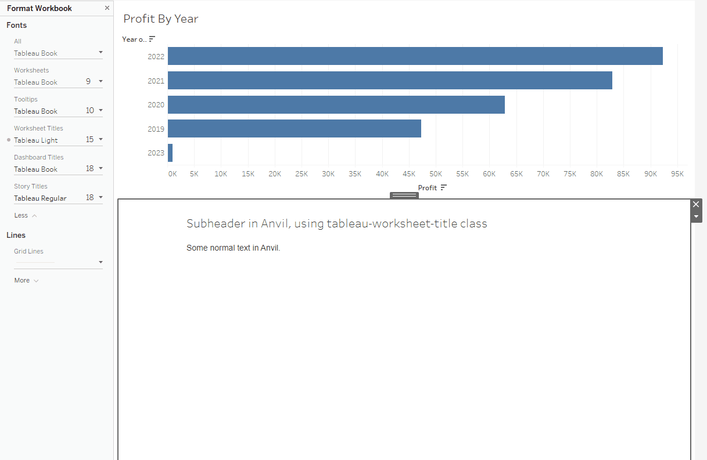

Style the extension using Tableau workbook formatting
It can be helpful to have the styling of the Anvil extension to match the Tableau workbook’s theme. This can be accomplished by using the html classes listed here. For example, if you create a blank form with raw html that contains:
<h1 class="tableau-worksheet-title"> Subheader in Anvil, using tableau-worksheet-title class </h1>
The styling of this h1 element will now match the styling selected in Tableau when navigating through Format > Workbook > Worksheet Titles.
Tada!
